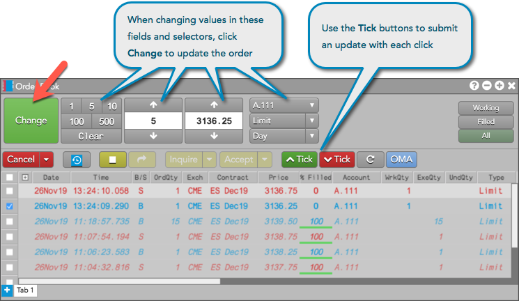
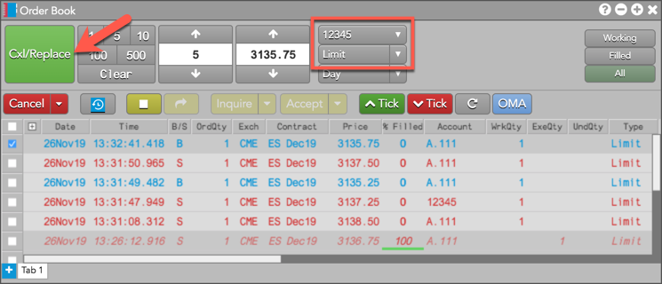
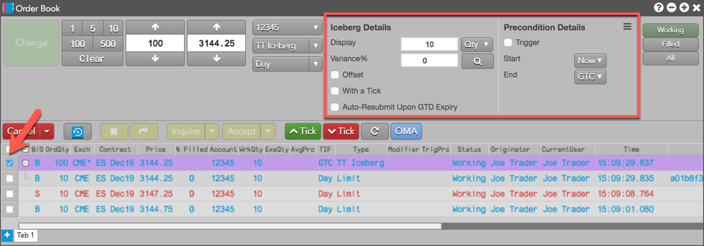
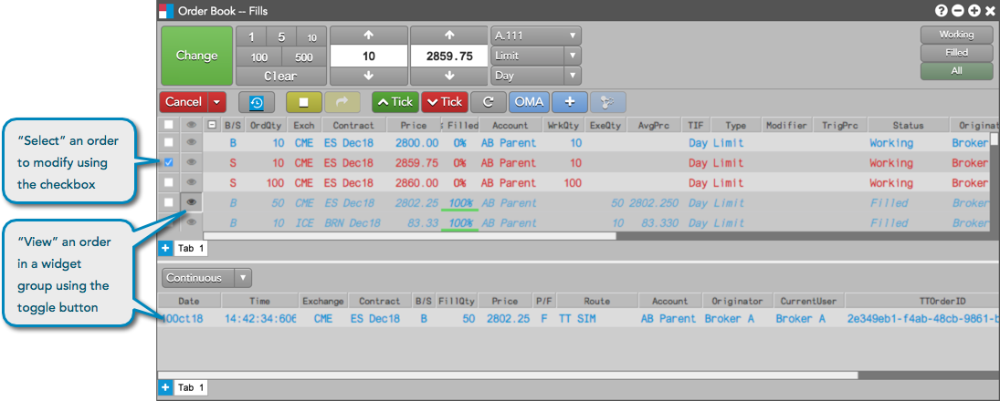
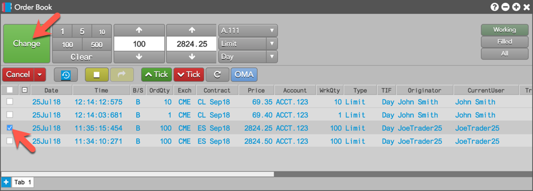
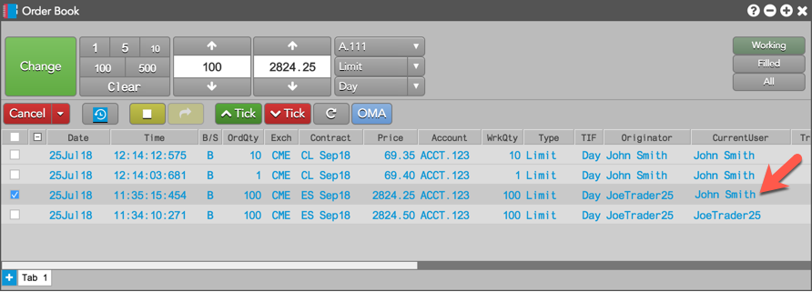

and
and  buttons. When you use these buttons, the changes happen immediately. When using the Change or Tick buttons, the order's position in queue is retained.
buttons. When you use these buttons, the changes happen immediately. When using the Change or Tick buttons, the order's position in queue is retained.Using the Order Book widget, you can change the price, quantity, account, order type, or time-in-force of a working order. Simply select an order, modify the order as desired, and click .

You can also raise or lower the price on an order by ticks by clicking the and buttons. When you use these buttons, the changes happen immediately. When using the Change or Tick buttons, the order's position in queue is retained.
Note: If you select multiple orders, you can reprice them all by increasing or decreasing the price by the same number of ticks. No other options are available.
If the modification requires that you cancel/replace the working order, the Change button displays as and indicates the order will lose its position in queue. The Cxl/Replace button is displayed when you modify the following:

When selecting a working parent order for a TT Order Type, you can make changes to the parameters for the selected order type directly from the Order Book.

When an Order Book is part of a widget group, the  toggle button is displayed in the "view" column for each order row. The button is used for "viewing" filled and partially filled orders in a grouped widget. When the toggle button is displayed, the checkbox is used for "selecting" an order to modify or cancel in the grouped Order Book.
toggle button is displayed in the "view" column for each order row. The button is used for "viewing" filled and partially filled orders in a grouped widget. When the toggle button is displayed, the checkbox is used for "selecting" an order to modify or cancel in the grouped Order Book.

The CurrentUser field displays the the user name of the person who is monitoring an order while it is working in the market and, when orders are entered by multiple users sharing the same account, identifies the person who has "last touched" an order. To identify yourself as the monitor of manual or automated orders, you can update the CurrentUser field of an order in the Order Book:

You should now see your user name in the CurrentUser field.
